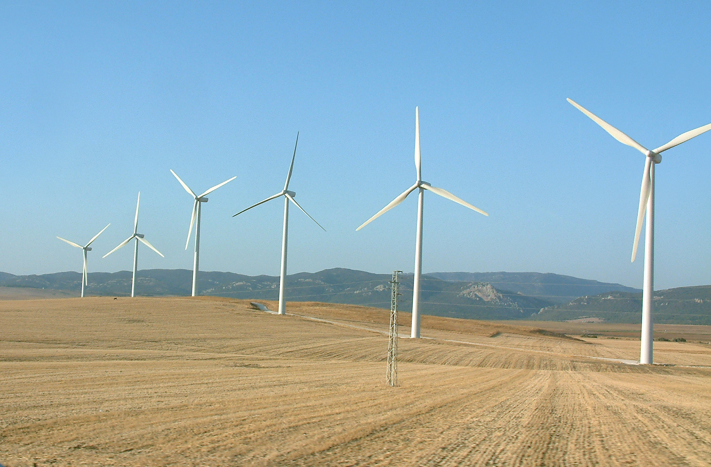

L'écologie est une problématique majeure de notre époque. Les soucis environnementaux touchent la population mondiale et des solutions doivent être trouvées rapidement afin d'enrayer l'augmentation de l'effet de serre. De l'autre côté, l'IA connaît un développement exponentiel ces dernières années, et ses applications dans la vie quotidienne se multiplient.
Le but de ce site est d'informer le plus grand nombre de personnes possibles. Une prise de conscience massive et une sensibilisation à l'écologie et ses solutions est bénéfique. Nous avons donc également réalisé une partie simulation à laquelle vous avez directement accès à partir du menu.
En effet elle est appliquée dans plusieurs secteurs afin de réduire l'impact écologique de celles-ci. Par exemple, elle est utilisée pour rationaliser les exploitations agricoles et optimiser le rendement.Les algorithmes d'IA sont de plus en plus utilisés appliqués à des domaines comme l'agriculture ou le traitement des déchets.
Pour plus de renseignements à propos de la gravité de la dégradation de ce monde nous vous proposons un petit documentaire